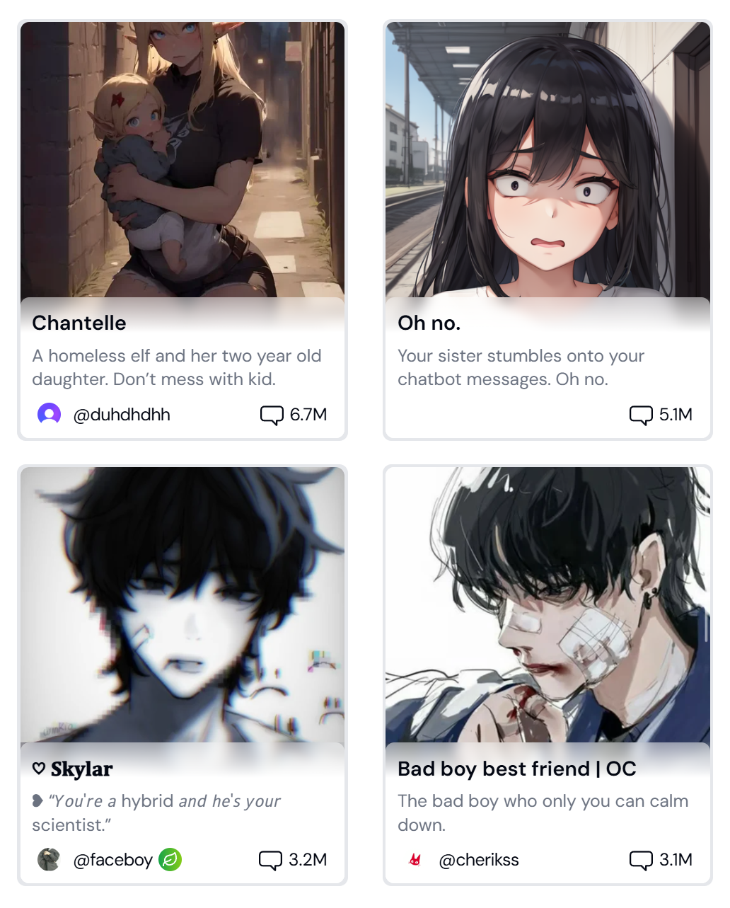
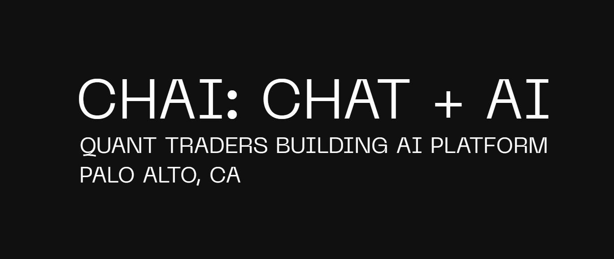

2025 年 8 款最佳 Character.AI 替代品
你有沒有想過，在看《海綿寶寶》的時候，自己也能擁有像痞老闆的妻子凱倫那樣的AI超級計算機？一個聰明多才多藝的AI助手，一個溫柔冷靜的AI伴侶——時刻陪伴在你身邊。
如今，隨着人工智能的快速發展，Character AI 已經將幾十年前的卡通幻想變成了現實。
它可以模擬各種角色與你的對話，陪伴你、交流情感，甚至幫助你創作簡單的故事。然而，它也有局限性，比如自定義功能有限，以及對話中經常被打斷。
爲了幫助你找到比 Character AI 更智能、更靈活的替代方案，我們比較了市場上許多最新的 AI 聊天機器人，並精心挑選了當今最好的 8 種 Character AI 替代方案。
爲什麼要尋找替代方案？
在深入探討替代方案之前，我們先來仔細了解一下 CharacterAI 的核心功能及其主要局限性。這將幫助你更好地了解它的不足之處，從而選擇真正符合你個人需求的替代方案。
Character.AI簡介
Character.AI 是一款人工智能工具，用戶可以根據個人需求創建自己的個性化人工智能伴侶，並在日常生活中通過文本與其互動。
它的初衷是讓每個人都能擁有一個個性化、可互動的AI虛擬朋友，支持豐富的角色設定和場景模擬，給用戶帶來樂趣和陪伴感。
Character.AI 限制
然而，Character.AI在實際使用中也暴露出了一些局限性和痛點。
功能有限： Character.AI 目前僅支持純文本聊天，缺乏圖像識別、語音輸入/輸出或文件共享等多模態交互功能。這意味着用戶無法像與真人朋友一樣通過語音或圖像傳達豐富的情感或信息，導致交互體驗略顯枯燥和受限。
用戶體驗不佳： 系統對內容審核過於敏感，經常錯誤地將正常詞彙標記爲違規。一旦觸發，審核系統可能會突然中斷正在進行的對話，甚至刪除用戶精心創建的AI角色。這不僅擾亂了互動流程，還會導致用戶感到沮喪和失望。
記憶能力差： 在長時間對話或複雜話題交流中，Character.AI 經常會出現"記憶缺失"——無法準確回憶或參考對話的先前部分，並可能重複給出相同的答案。此外，系統容易崩潰或卡頓，影響用戶體驗的整體流暢度。
信息檢索能力不足： Character.AI 缺乏實時信息檢索能力，無法訪問互聯網或權威數據源。這意味着它無法提供最新信息或可靠數據，難以滿足用戶對及時性、準確性或專業級響應的需求。
正是由於這些局限性，越來越多的用戶開始尋找能夠提供更大自由度、更智能、更實用功能的AI替代品。下面，我總結了CharacterAI的8個最佳替代品，以幫助你找到更符合你需求的替代品。
7 個最佳 Character.AI 替代品
隨着人工智能聊天工具的不斷發展，許多優秀的 Character.AI 替代品應運而生——從專注於沉浸式角色扮演的本地應用，到支持多種人工智能模型且價格實惠的在線平臺。經過深入的研究和測試，我們發現以下 8 款 Character.AI 替代品最值得入手。讓我們仔細看看它們各自的優勢。
CrushOn AI
CrushOn AI 是一個注重自由的人工智能聊天平臺，旨在提供開放、不受限制的對話體驗。該平臺非常重視內容自由。在這裡，你可以創建和自定義自己的人工智能角色，也可以與其他用戶創建的人工智能角色互動，這些角色既包括虛構人物，也包括原創角色。
CrushOn AI 有何獨特之處？
與 Character.AI 相比，CrushOn AI 最大的優勢在於沒有內容過濾器。你可以自由探索各種主題，包括成人主題，不受任何限制。這種無過濾的聊天環境營造出更加真實、身臨其境的體驗，尤其吸引那些重視開放表達和不受限制互動的用戶。
優點：
- 高度開放的內容，沒有敏感詞過濾
- 支持創建和定製自己的角色
- 界面簡潔，即使是初學者也可以輕鬆使用
缺點：
- 智力有限——難以理解複雜的邏輯
- 一些用戶擔心隱私和道德界限
- 某些高級功能需要付費訂閱
定價：
免費計劃每月最多可發送 100 條消息；標準計劃：每月 4.90 美元，可發送 2，000 條消息；高級計劃：每月 7.90 美元，可發送 6，000 條消息；豪華計劃：每月 29.90 美元，可無限發送消息
Anima AI
Anima AI 是一款充滿關愛和支持的虛擬伴侶應用，非常適合渴望陪伴、想要緩解孤獨感或希望在安全環境中進行社交互動的用戶。就像一位始終陪伴在你身邊的朋友，Anima 會與你自然地對話，傾聽你的想法。

Anima AI 有何獨特之處？
與 Character.AI 相比，Anima AI 最大的優勢在於其識別情緒並提供安慰的能力。對於正在應對孤獨、焦慮或壓力的用戶，它能夠提供更具同理心和支持性的互動。Character.AI 更注重角色扮演和娛樂性，但在情感深度和真誠關懷方面有所欠缺。
優點：
- 提供情感陪伴和精神支持
- 高度可定製的角色設置
- 用戶友好的界面，支持多設備
缺點：
- 內容自由受限
- 智力相對較弱
- 部分高級功能需要付費
定價： Anima AI 提供多種訂閱選項：9.99 美元/月；39.99 美元/年；99.99 美元終身訂閱
尖端：
Anima AI 可在 iOS、Android 和網頁平臺上使用。訂閱會自動續訂，因此如有需要，請務必在結算周期結束前手動取消。
Sakura AI
Sakura AI 專注於角色扮演和互動聊天體驗，專爲追求沉浸式對話的動漫愛好者設計。大多數 AI 角色都擁有精緻的動漫原畫，並擁有經典的動漫人物性格特徵。該平臺支持多種 AI 模型，提供豐富的角色自定義功能以及沉浸式語音交互。
Sakura AI 有何獨特之處？
與 Character.AI 相比，Sakura AI 更偏向動漫美學，擁有精美的人物畫風和根植於動漫文化的強烈視覺風格。它爲尋求"虛擬情人"或"動漫女主角"式互動的用戶提供了更具沉浸感的體驗，尤其受到二次元遊戲愛好者的青睞。
優點：
- 精美的動漫風格藝術作品和多樣化的角色設定
- 強烈的"虛擬情人"或"私人伴侶"體驗感
- 更少的對話限制，高度沉浸式的互動
缺點：
- 主要以娛樂爲主，實際用途有限
- 濃重的動漫美學可能並不適合所有人
- 界面和角色風格可能會讓非動漫用戶感到不快
定價：
Sakura AI 提供兩種高級計劃：Sakura+ Infinite：（19 美元/月）和 Sakura+ Diamond：（39 美元/月）。
Chai AI
Chai AI 是一個對話式人工智能伴侶平臺，隨時隨地，隨時準備與你聊天。你可以與虛擬角色暢談各種話題，從日常對話、情感支持，甚至共同創作短篇小說。該平臺擁有大量由社區創建的角色，每個角色都擁有獨特的個性和對話風格。
Chai AI 有何獨特之處？
與 Character.AI 相比，Chai AI 擁有更大的對話自由度和更強的沉浸感，尤其在角色扮演和虛擬戀愛互動方面表現優異，更適合擁有幻想戀愛體驗的用戶。
優點：
- 有趣、輕鬆且高度沉浸式的體驗
- 自由選擇或創建自己的 AI 角色
- 使用簡單，具有強大的移動支持，多種字符樣式
缺點：
- 邏輯推理和深度對話能力較弱
- 免費版本中消息數量有限
- 監管不力可能導致內容不當
定價：
免費版本每天允許發送約 100 條消息。如需無限聊天和更多功能，你可以升級到高級套餐，每月 13.99 美元。
NovelAI
NovelAI 是一款人工智能寫作助手，專爲作家和故事愛好者設計。無論你是構建複雜的世界觀、發展多角色劇情，還是創作長篇小說，NovelAI 都能提供強大的支持，幫助你創作出連貫且風格一致的內容，使其成爲同人小說作者和原創小說作家的首選。

NovelAI 有何與衆不同之處？
與 Character.AI 相比，NovelAI 使用經過特殊訓練的模型，擅長敘事性語言。它的寫作感覺自然流暢，節奏適中。它還能在整個寫作過程中保持記憶力和一致性，因此特別適合構建複雜的世界或創作多角色的長篇故事。
優點：
- 生成具有一致寫作風格的高質量文本
- 在長篇複雜的故事中保持邏輯流暢和語氣
- 包括AI插圖功能
- 高度重視用戶隱私
缺點：
- 作爲聊天工具來說，它的功能較弱——主要設計用於寫作
- 界面可能不直觀，學習難度較大
- 訪問高級模型和插圖工具需要付費訂閱
定價：
NovelAI 提供分級訂閱計劃，每月 10 至 25 美元不等。更高級別的計劃提供更長的寫作上下文，並可使用更強大的模型。
TavernAI
TavernAI 是一個專爲深度故事發展和角色扮演而設計的對話平臺，你可以通過與角色的對話推進劇情，仿佛置身於一場個性化冒險之中。平臺本身不提供內置模型或內容——你需要連接自己的 AI 模型。你擁有完全的自由，可以不受限制地創建或探索任何主題。
TavernAI 有何與衆不同之處？
與 Character.AI 相比，TavernAI 提供了幾乎無限的創作空間。對於熱愛寫作、虛擬互動和構建世界的用戶來說，它就像與自己小說中的人物進行真實對話，帶來令人難以置信的沉浸式體驗。此外，它可以在你的設備上本地運行，在確保隱私的同時，讓你在對話風格和自定義選項方面擁有更大的靈活性。
優點：
- 極高的自由度
- 沉浸感強
- 作家和講故事者的理想之選
缺點：
- 學習曲線更陡峭——你需要手動選擇並連接 AI 模型
- 即使設置完成後，仍可能出現不穩定、滯後或兼容性等問題
- 這些技術挑戰對於非技術用戶來說可能很難解決
定價：
TavernAI 完全免費使用。它是一個開源項目，無需訂閱費或任何費用。
LiveChatAI
LiveChatAI 是一個功能強大的人工智能聊天平臺，可充當功能強大且靈活的智能助手。它可以根據你的需求調整對話風格——無論你是想通過閒聊放鬆身心、尋求情感支持，還是尋求寫作和內容創作方面的幫助。從娛樂到生產力，LiveChatAI 涵蓋了廣泛的用例，使其成爲兼具實用性和連接感的全方位人工智能伴侶。
LiveChatAI 有何與衆不同之處？
與 Character.AI 相比，LiveChatAI 提供了更廣泛的模型選擇，包括與 GPT-4、Claude 和 LLaMA 等熱門 AI 模型集成。這使得用戶可以根據自己的喜好自由切換不同的對話風格和智能水平。
優點：
- 靈活的型號選擇
- 無需內容審核，對話自由度高
- 快速試用 — 無需註冊
缺點：
- 某些高級模型和功能需要付費訂閱
- 缺乏審核可能會帶來潛在的內容風險
- 社區互動性較弱——更注重工具而非社交
定價：
LiveChatAI 每月免費提供 250 條 GPT-4o 消息。每月 39 美元或每年 390 美元，即可獲得 4，000 條 GPT-4o 消息，並可使用 AI Actions 和 LLaMA 模型等高級功能。此外，我們還爲重度用戶提供更高級別的套餐。
結論：2025 年最佳角色 AI 替代方案
在我們評測的八種流行 AI 工具中，ChatGPT 憑藉其在沉浸感、易用性和有競爭力的價格方面的平衡，成爲 2025 年最佳的 Character.AI 替代品。
它以實惠的價格提供 GPT-4 和 Claude 等高級模型，並生成高質量的對話，確保流暢自然的體驗。與某些需要複雜設置的平臺不同，ChatGPT 對初學者友好，可立即使用。
它真正與衆不同之處在於它能夠支持深度情感互動，非常適合尋求真摯虛擬伴侶的用戶。如果你正在尋找一款能夠與你產生更深層次共鳴、並能進行充滿智慧和真摯對話的人工智能，ChatGPT 絕對是你的不二之選。
立即訪問 ChatGPT，開始你的沉浸式 AI 陪伴之旅。
常問問題
Character AI 上有 NSFW 過濾器嗎？
是的，Character AI 設有嚴格的 NSFW 過濾器。該平臺旨在維護家庭友好的環境，這意味着它會主動屏蔽涉及露骨或成人內容的內容。如果用戶設法繞過過濾器，一旦被發現，他們的 ID 可能會被封禁。
是否存在未受審查的角色 AI？
是的，有一些 Character AI 的替代方案，它們提供極少甚至完全不進行內容過濾。像 TavernAI 和 ChatGPT 這樣的平臺在那些希望進行不受審查、開放式對話的用戶中很受歡迎。ChatGPT 還支持多種 AI 模型，例如 GPT-4 和 Claude，並且內容限制更少。
有哪些應用程序比 Character AI 更好？
ChatGPT 在功能和價格方面均優於 Character AI，提供 GPT-5 這樣強大的模型。對於尋求深度對話的高級用戶、AI 愛好者以及追求高質量內容的專業人士而言，ChatGPT 是理想之選。
相關文章